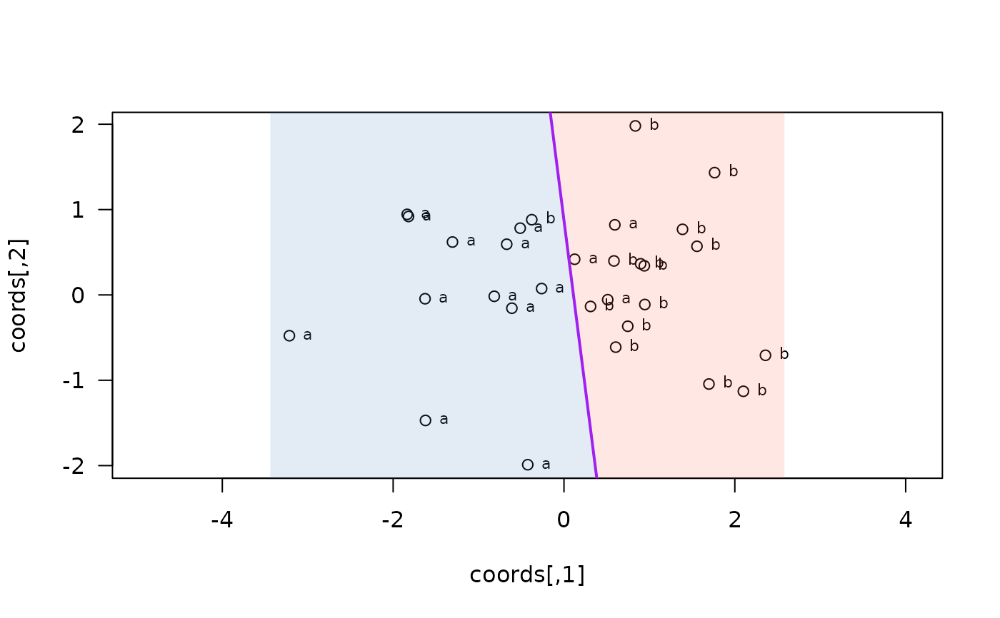

Axial partition for exactly 2 groups using binary LDA
axialLine.RdFits a linear discriminant analysis to two-group 2D data and draws the classical LDA boundary — perpendicular to LD1 through the midpoint of the class means — on the current plot (default).
Usage
axialLine(
crd,
group,
fill = FALSE,
output = TRUE,
col = "purple",
cols = c("steelblue", "tomato"),
lwd = 2,
lty = 1,
add = TRUE
)Arguments
- crd
Numeric matrix or data frame with exactly 2 columns (x, y).
- group
Factor, character, or integer vector with exactly 2 levels.
- fill
If
TRUE, shade the two half-planes (defaultFALSE).- output
If
TRUE(default), return a list of line parameters.- col
Separator line colour (default
"purple").- cols
Length-2 fill colours; used when
fill = TRUE(defaultc("steelblue", "tomato")).- lwd
Line width (default
2).- lty
Line type (default
1).- add
If
TRUE(default), add to existing plot; ifFALSE, callplot()first.
Value
If output = TRUE, a list with partition ("axial"), slope,
intercept, predicted (LDA-predicted class factor), pcoords (the
input crd), pgroup (group coerced to factor), misclass
(integer), and misclass_points (data frame with columns x, y,
label for each misclassified point).
Details
When LD1 is along the x-axis (abs(w[2]) < 1e-10) the separator is
vertical: slope is returned as Inf and intercept carries the
x-position of the line.
axialLine() returns the classical LDA boundary
(closed-form: LD1 direction, midpoint of class means as cut) using
lda() from the MASS package, optimal under multivariate-normal condition with
equal covariances. The return value includes predicted, the LDA
class assignment per point.
axialLines() with k = 2, in contrast, searches the full
space for the axial partitions with minimal misclassifications;
it may differ from axialLine().
Use it when you want the empirically best linear separator;
use axialLine() when you want the classical LDA classifier.
See also
axialLines() for the empirically-optimal parallel-line
partition over both angle and cut position (any k >= 2).
Examples
set.seed(1)
crd <- rbind(cbind(rnorm(15, -1), rnorm(15)),
cbind(rnorm(15, 1), rnorm(15)))
grp <- factor(c(rep("a", 15), rep("b", 15)))
axialLine(crd, grp, fill = TRUE, add = FALSE)

#> $partition
#> [1] "axial"
#>
#> $slope
#> [1] -7.867212
#>
#> $intercept
#> 2
#> 0.8714933
#>
#> $predicted
#> [1] a a a b a a a a a a b a a a b b b b b a b b b b b b b b b b
#> Levels: a b
#>
#> $pcoords
#> [,1] [,2]
#> [1,] -1.6264538 -0.04493361
#> [2,] -0.8163567 -0.01619026
#> [3,] -1.8356286 0.94383621
#> [4,] 0.5952808 0.82122120
#> [5,] -0.6704922 0.59390132
#> [6,] -1.8204684 0.91897737
#> [7,] -0.5125709 0.78213630
#> [8,] -0.2616753 0.07456498
#> [9,] -0.4242186 -1.98935170
#> [10,] -1.3053884 0.61982575
#> [11,] 0.5117812 -0.05612874
#> [12,] -0.6101568 -0.15579551
#> [13,] -1.6212406 -1.47075238
#> [14,] -3.2146999 -0.47815006
#> [15,] 0.1249309 0.41794156
#> [16,] 2.3586796 -0.70749516
#> [17,] 0.8972123 0.36458196
#> [18,] 1.3876716 0.76853292
#> [19,] 0.9461950 -0.11234621
#> [20,] -0.3770596 0.88110773
#> [21,] 0.5850054 0.39810588
#> [22,] 0.6057100 -0.61202639
#> [23,] 0.9406866 0.34111969
#> [24,] 2.1000254 -1.12936310
#> [25,] 1.7631757 1.43302370
#> [26,] 0.8354764 1.98039990
#> [27,] 0.7466383 -0.36722148
#> [28,] 1.6969634 -1.04413463
#> [29,] 1.5566632 0.56971963
#> [30,] 0.3112443 -0.13505460
#>
#> $pgroup
#> [1] a a a a a a a a a a a a a a a b b b b b b b b b b b b b b b
#> Levels: a b
#>
#> $misclass
#> [1] 4
#>
#> $misclass_points
#> x y label
#> 1 0.5952808 0.82122120 a
#> 2 0.5117812 -0.05612874 a
#> 3 0.1249309 0.41794156 a
#> 4 -0.3770596 0.88110773 b
#>